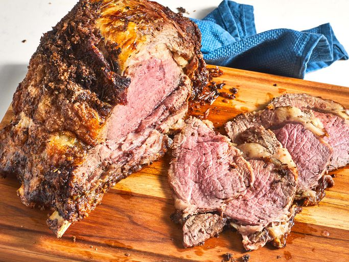

Prime Rib

Description
Prime rib is a premium beef cut celebrated for its rich marbling and tender texture. Roasted to develop a flavorful crust while keeping the inside juicy and succulent, it offers a deep, beefy taste that stands out as a main attraction on any table.
Perfect for special occasions, prime rib pairs beautifully with classic sides like roasted vegetables, Yorkshire pudding, and horseradish sauce. Its elegant presentation and savory flavor make it a timeless favorite for memorable dining experiences.
Ingredients
- 1 (4 pounnd) bone-in prime rib roast (room temperature)
- 1/4 cup unsalted butter, softened
- 1 teaspoon freshly ground black pepper
- 1 teaspoon herbes de Provence
- kosher salt to taste
Steps
- Gather the ingredients. Place prime rib roast on a plate and bring to room temperature, 2 to 4 hours. Preheat the oven to 500 degrees F (260 degrees C).
- Combine butter, pepper, and herbes de Provence in a bowl; mix until well blended. Spread butter mixture evenly over entire roast. Season roast generously with kosher salt.
- Roast the 4-pound roast in the preheated oven for 20 minutes. (If your roast is larger or smaller than 4 pounds, multiply the exact weight times 5 minutes.)
- Turn the oven off and, leaving the roast in the oven with the door closed, let the roast sit in the oven for 2 hours.
- Remove roast from the oven, slice, and serve.